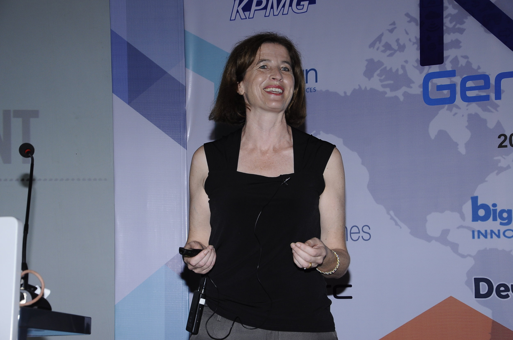

By Anne-Marie Charrett and Fiona Charles
Towards the end of 2014, the two of us were sitting over drinks at a the speakers’ reception for a major international conference and getting grumpy about the poor ratio of women to men in the room. After all, we each knew lots of bright, engaged women testers doing really interesting work. Why weren’t they there with us?
Neither of us is a patient person and we share a low boredom threshold, so we were soon having much more fun tossing around ideas than just grumping. We wanted to DO SOMETHING POSITIVE! What could we do to get more women on stage? We sounded out some prominent women speakers at the reception and they were all enthusiastic about doing something too. SpeakEasy was born out of those conversations.
We knew that the software testing industry had a higher percentage of women compared to software programming, but for some reason that ratio didn’t translate to speakers at testing conferences. Having each been involved in organizing conferences, we found that it was a real struggle to find good women speakers. When we approached good female testers, and asked them to speak, we often got "I have nothing to say" or "I'm not ready yet". So it wasn't necessarily that they didn't want to speak, but often it was that they felt unready to make the leap and actually send in a proposal. We designed SpeakEasy to help them get ready, with a core that combined a mentoring program to match experienced speakers with novices, along with conference partnerships.
We had terrific support from the testing community, with many experienced speakers signing up to mentor aspiring new speakers. Then CAST 2015 accepted proposals from 3 of our new speakers. Our goal had been to have one speaker selected, so you can imagine how excited we were to discover that we would have 3 at CAST. After that, SpeakEasy took off, and we had a number of amazing conferences offering speaking spots to SpeakEasy speakers.
Wow! Neither of us had any idea how popular SpeakEasy was to become. In the last 4 years, we've had almost 300 people apply to be mentored. We've lost count of the number of people who have spoken through the program (stats wasn't our strong point!), but personal anecdotes have told us how powerful the platform is. We’ve had an outstanding group of mentors.
We've also had wonderful volunteers to help with the grunt work—Carsten Feilberg and Lee Hawkins stand out, but many others played a part. Our processes were pretty lousy and mostly manual, but we made up for that with passion and commitment. We always knew that there was lots to improve, but we were so busy making SpeakEasy work that we never had time to step back and improve it. Enter Abby Bangser, who with her energy and drive soon put our inertia in this space to shame.
Over time, we came to realize that it was time to hand SpeakEasy leadership over to others. We started something amazing, but we are not necessarily the best people to keep SpeakEasy going in the long term. We began looking for the right leader and team to sustain SpeakEasy and take it forward.
We were delighted to accept Maaret Pyhajarvi’s offer to rejuvenate SpeakEasy with SpeakEasy 2.0. With Maaret, Ash Coleman, Kristine Corbus and Abby Bangser on the team, we believe that our initiative is in great hands.
We are proud of what we have achieved to date and we are grateful that our legacy is being continued through others. Our wish is that new speakers, mentors and volunteers continue to enjoy their journey in this space.
We created something magical. We look forward to seeing the magic continue.
And we look forward to seeing what new magic we will create.
